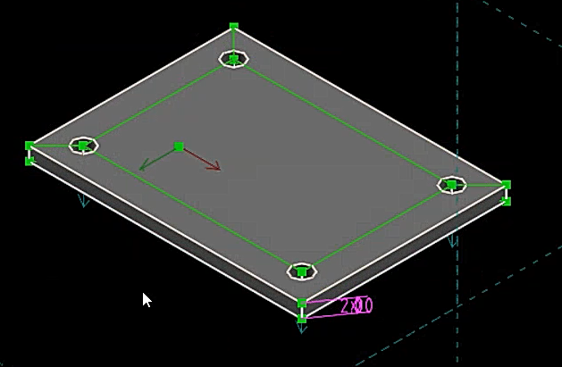

Weeks <<
Previous Next >> week6-9
week2-5
Week2
建立個人倉儲cad2019及編輯網站
1.下載2019Fall可攜套件.7z
2.建立cad2019
3.git clone https://github.com/s40723218/cad2019
4.git submodule add https://github.com/mdecourse/cmsimde.git
5.進入cmsimde後,輸入python -m pip install flask_cors 更改模組 6.python wsgi.py 進入近端進行編輯
7.編輯完成後git status > git add . > git commit -m " " > git push
個人操作影片
Week3
Solvespace編譯
1. sh.exe 改名為 sh_rename_for_solvespace.exe。
2.git version 查驗 git 版本
3 git clone --recurse-submodules https://github.com/solvespace/solvespace.git solvespace
4.編譯Y:\tmp\solvespace\extlib\angle\CMakeLists.txt comment out line 713 and 714
endif()(在713跟714前面加#)
5.手動編輯 libpng.dll.a 改名 libpng_static.a, 並放到編譯系統的 lib 目錄中
6.cd solvespace->cd extlib->cd libpng->mkdir build->cd build->cmake .. -G "MinGW Makefiles" -DCMAKE_BUILD_TYPE=Release->mingw32-make
7.最後回到solvespace 原始碼目錄, 建立 build 目錄後進入 build 目錄, 輸入cmake .. -G "MinGW Makefiles" -DCMAKE_BUILD_TYPE=Release->mingw32-make
個人操作影片
Week4
自主練習
網站更新以及拍攝操作影片
1.使用的錄影軟體 ShareX

2.使用的上字幕及浮水印軟體 ArcTime

3.浮水印
Week5
solvespace繪製練習
1.使用快捷鍵(R)繪製出一個矩形
2.使用快捷鍵(D)標註尺寸為40X30的矩形
3.再繪製一個矩形在裡面
4.使用快捷鍵(G) 使其變成綠色參照線
5.利用快捷鍵(C)繪製4個圓孔
6.點選2個圓孔並按下快捷鍵(Q)使其相等直徑，依序操作
7.然後使用快捷鍵(D)標註尺寸以及快捷鍵(N)標註角度
8.最後利用快捷鍵 shift+x 拉伸板子 ，並使用(D)設定厚度
9.快捷鍵(W)為正視圖 ，快捷鍵 F3為等角圖
完成圖

個人操作影片
Weeks <<
Previous Next >> week6-9